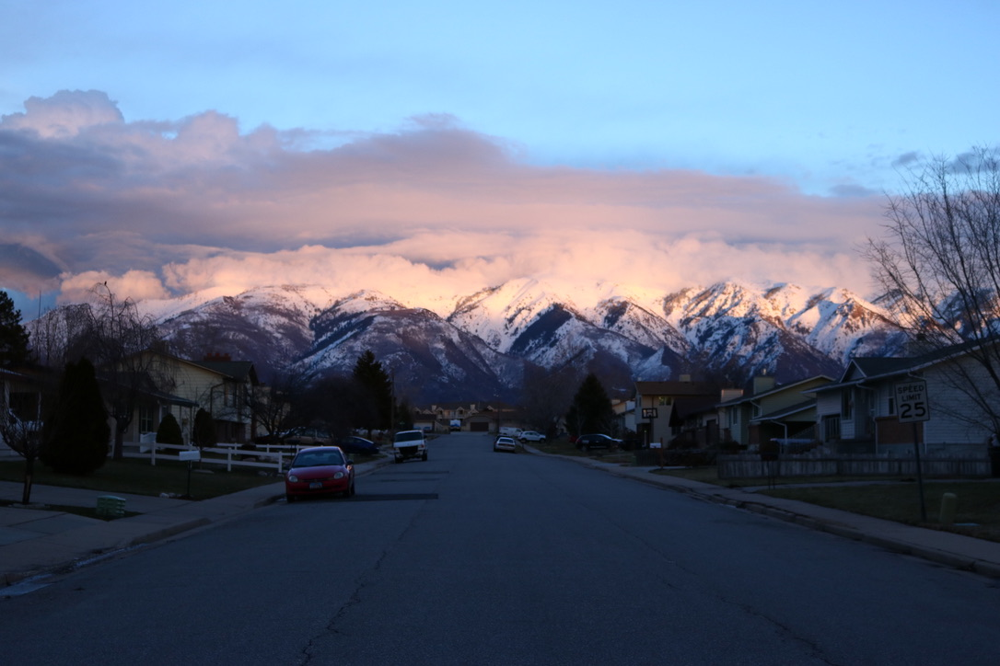
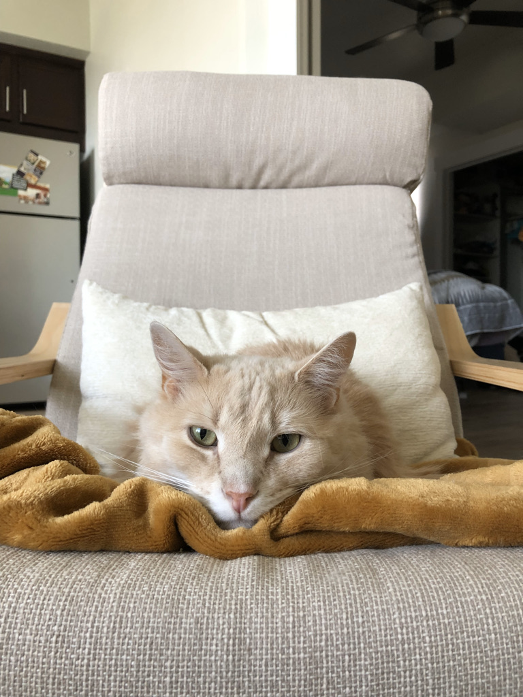

I grew up in a small town in southwestern Pennsylvania. We were always outside as a family. I started skiing at a young age and that never stopped. From there, my love for the outdoors has only grown stronger.


I moved to Utah in 2015. I'm still blown away every time I look at the mountains that surround me. I have been able to explore most of the surrounding area with lots of hiking, camping, skiing, and climbing. This year, I started mountain and gravel biking. I recently completed the longest bike ride I have ever done just under 50 miles total. My goal with biking is to complete a bike packing trip.
Fun fact about me is that I have three cats; Aspen, Gracie, and Sidney. Aspen and Gracie are siblings and were adopted by my mother and I, and Sidney was adopted when I moved to Utah. Aspen is a tan Himalyan mix and Gracie is also a Himalayan mix with Himalayan features. Sidney is a calico. They each have their own personalities and there's truly never a dull moment.
I also live with my friends who have two Golden Retrievers. Beans is 4 years old and Ginger is 2 years old. Also, never a dull moment with unlimited belly rubs, catching the frisbee in the park, and playing tug.

I am searching to continuously challenge myself in my professional career. I have always been interested in the development side of the information technology field. I am beyond excited for this new adventure and can't wait to see where it takes me.